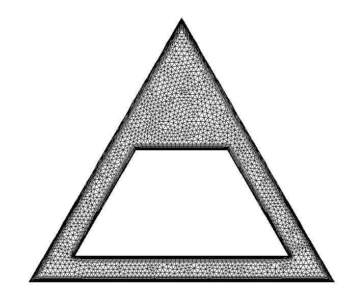
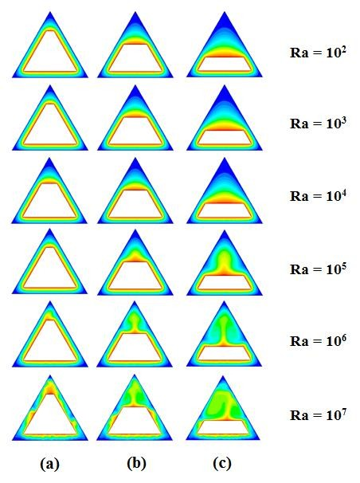

The question
Hot air rises. Inside a closed box, that simple fact sets up a slow loop of moving air that carries heat from hot surfaces to cold ones.
This is natural convection. No fan drives the flow. The air moves only because warm air is lighter than cold air. Triangular enclosures are common in practice. A solar water distiller has a sloped glass roof over a hot basin. An attic sits under a pitched roof. Air conditioning ducts and equipment housings take similar shapes.
So the aim was to find out how a trapezoidal cylinder affects the rate of heat transfer in an equilateral triangular enclosure. We varied two things: how strongly the flow is driven (the Rayleigh number) and how tall the trapezoid is (the aspect ratio).
The setup
An equilateral triangle of height H holds a trapezoidal cylinder of height H1. The space between them is filled with air. The bottom of the trapezoid is fixed at 0.1H above the base of the triangle, and its height is varied. The aspect ratio is H1/H.
Both shapes are assumed to be infinitely long, so the problem can be solved on a two-dimensional slice. The trapezoid is held at a uniform hot temperature Ti and the triangle at a uniform cold temperature To.
The equations
Three dimensionless numbers carry the whole story. Each compares two effects, so the results hold for any box of the same shape, at any scale.
The flow is governed by conservation of mass, momentum and energy. In dimensionless form, for steady laminar flow:
Lengths are scaled by H, velocities by vo = (α/H)Ra0.5, pressure by ρvo², and temperature as θ = (T − To)/(Ti − To). The term Pr θ in equation (3) is buoyancy: it is what makes the warm air rise. Air properties are taken at the mean film temperature, (Ti + To)/2.
How it was solved
The equations have no exact solution for this shape, so they were solved numerically.

- Unstructured grid. Triangular cells follow the slanted walls.
- Finer near the walls. Temperature and velocity change fastest in the thin layers next to each surface, so the cells are smallest there.
- Body force weighted scheme for the pressure, which suits flows driven by buoyancy.
- SIMPLE algorithm (Patankar, 1980) to couple pressure and velocity.
Figure 2 from the paper: the computational grid.
Checking the model
Before trusting new results, the model was run on a case someone had already solved: a heated circular cylinder in a triangular enclosure (Xu et al., 2010). We computed the average Nusselt number for two cylinder sizes, D/H = 1/2 and 1/6, and compared.
The two sets of results agree closely across four orders of magnitude of Ra. The model was then applied to the trapezoid.
Results
We ran every combination of five aspect ratios, from 0.2 to 0.6, and six Rayleigh numbers, from 102 to 107. Ra stops at 107 because beyond that the flow starts to turn turbulent, and the laminar model no longer holds.
Heat transfer
Two things stand out. First, each curve is flat up to Ra = 104. At low Ra, conduction dominates. The air is too sluggish to carry much heat, so pushing it a little harder changes nothing. Nu rises slightly at 105 and then sharply at 106 and 107, as convection takes over.
Second, Nu is higher for taller trapezoids at every Ra. Going from an aspect ratio of 0.2 to 0.6 roughly triples it in the flat region, from about 8 to about 26. At Ra = 107 it goes from about 16 to about 38.
Temperature fields
The temperature contours show why. Red is hot, near the trapezoid. Blue is cold, near the walls.

Figure 5 from the paper. Columns: (a) H1/H = 0.6, (b) 0.4, (c) 0.2.
Conclusions
We studied laminar natural convection from a trapezoidal cylinder in a triangular enclosure numerically, varying Ra and H1/H. Three trends emerged.
References (14)
- Flack, R. D., Konopnicki, T. T., & Rooke, J. H. (1979). The measurement of natural convective heat transfer in triangular enclosures. Journal of Heat Transfer, 101(4), 648–654.
- Flack, R. D. (1980). The experimental measurement of natural convection heat transfer in triangular enclosures heated or cooled from below. Journal of Heat Transfer, 102(4), 770–772.
- Poulikakos, D., & Bejan, A. (1983). Natural convection experiments in a triangular enclosure. Journal of Heat Transfer, 105(3), 652–655.
- Campo, E. M. D., Sen, M., & Ramos, E. (1988). Analysis of laminar natural convection in a triangular enclosure. Numerical Heat Transfer, Part A, 13(3), 353–372.
- Flack, R. D., Brun, K., & Schnipke, R. J. (1995). Measurement and prediction of natural convection velocities in triangular enclosures. International Journal of Heat and Fluid Flow, 16(2), 106–113.
- Holtzman, G. A., Hill, R. W., & Ball, K. S. (2000). Laminar natural convection in isosceles triangular enclosures heated from below and symmetrically cooled from above. Journal of Heat Transfer, 122(3), 485–491.
- Omri, A., Orfi, J., & Nasrallah, S. B. (2005). Natural convection effects in solar stills. Desalination, 183(1), 173–178.
- Koca, A., Oztop, H. F., & Varol, Y. (2007). The effects of Prandtl number on natural convection in triangular enclosures with localized heating from below. International Communications in Heat and Mass Transfer, 34(4), 511–519.
- Roy, S., Basak, T., Thirumalesha, C., & Krishna, C. M. (2008). Finite element simulation on natural convection flow in a triangular enclosure due to uniform and nonuniform bottom heating. Journal of Heat Transfer, 130(3), 032501.
- Cesini, G., Paroncini, M., Cortella, G., & Manzan, M. (1999). Natural convection from a horizontal cylinder in a rectangular cavity. International Journal of Heat and Mass Transfer, 42(10), 1801–1811.
- Shu, C., & Zhu, Y. D. (2002). Efficient computation of natural convection in a concentric annulus between an outer square cylinder and an inner circular cylinder. International Journal for Numerical Methods in Fluids, 38(5), 429–445.
- Park, Y. G., Ha, M. Y., & Park, J. (2015). Natural convection in a square enclosure with four circular cylinders positioned at different rectangular locations. International Journal of Heat and Mass Transfer, 81, 490–511.
- Xu, X., Yu, Z., Hu, Y., Fan, L., & Cen, K. (2010). A numerical study of laminar natural convective heat transfer around a horizontal cylinder inside a concentric air-filled triangular enclosure. International Journal of Heat and Mass Transfer, 53(1), 345–355.
- Yu, Z. T., Hu, Y. C., Fan, L. W., & Cen, K. F. (2010). A parametric study of Prandtl number effects on laminar natural convection heat transfer from a horizontal circular cylinder to its coaxial triangular enclosure. Numerical Heat Transfer, Part A, 58(7), 564–580.
- Patankar, S. V. (1980). Numerical heat transfer and fluid flow. Taylor & Francis.